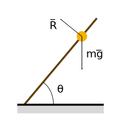

Introduzione alla meccanica Lagrangiana
La meccanica Lagrangiana è una formulazione matemetica della meccanica di Newton che fa uso di coordinate generalizzate. È utile per esempio per lo studio di sistemi in cui sono presenti vincoli. Inoltre spiega, attraverso il teorema di Noether, la conservazione di quantità di moto, energia e momento angolare.
La meccanica Lagrangiana (che si chiama così in onore del suo fondatore Joseph Louis Lagrange) è stato il punto di partenza per lo sviluppo della meccanica Hamiltoniana, la cui estensione viene poi usata per descrivere la meccanica quantistica.
Purtroppo il formalismo matematico di queste teorie è un po' pesante e, secondo me, offusca un poco lo scopo della teoria. Tenterò di rendere tutto il più semplice possibile.
Coordinate e vincoli
Quando si descrive un sistema fisico con la seconda legge di Newton:
$$ \frac{d\vec{p}}{dt} = \vec{F} $$
è necessario specificare tutte le forze agenti su ogni elemento del sistema. In seguito, risolvendo le equazione differenziali (la seconda legge di Newton è vettoriale, quindi corrisponde ad un sistema di equazioni) che ne risultano, è possibile calcolare il moto del sistema.
Sorge però un problema quando si ha a che fare con sistemi vincolati: spesso non si è a conoscenza dei valori delle reazioni vincolari, che diventano quindi delle incognite, rendendo non risolvibile l'equazione del moto.
Con il formalismo Lagrangiano si risolve questo problema (quando i vincoli sono ideali) utilizzando le coordinate generalizzate. In pratica, anche se la reazione vincolare incognita è un ulteriore variabile, il vincolo riduce i gradi di libertà del sistema, eliminando una coordinata necessaria ad esplicitare lo stato del sistema. Questi due effetti si compensano, ammesso che si usi un opportuno sistema di coordinate.

Esempio: Una pallina forata è inserita in un asta di legno. L'asta è mantenuta obliqua rispetto al pavimento. Vogliamo calcolare il moto della pallina, che è soggetta alla forza di gravità. Non siamo a conoscenza della reazione vincolare \( \vec{R} \) che l'asta esercita sulla pallina, tuttavia sappiamo che la pallina è costretta a muoversi lungo l'asta, per cui ha un solo grado di libertà. Scomponendo le forze lungo l'asta e ignorando le componenti perpendicolari all'asta stessa si ottiene un equazione facilmente risolvibile.
Notare che tutto questo è possibile se tra asta e palline non esiste attrito, poichè in questo caso la reazione vincolare è perpendicolare all'asta e viene quindi eliminata proiettando le forze lungo la direzione del moto. Quella che si ottiene è una cosiddetta equazione di puro moto poiché non sono presenti vincoli.
Se ci fosse stata anche una forza di attrito sarebbe stato necessario conoscere la sua forma esplicita per risolvere il problema, poichè il vincolo non era ideale.
Adottando un sistema di coordinate lungo l'asta è quindi possibile risolvere il problema in maniera semplice. Questa tecnica è molto utilizzata anche nella normale meccanica Newtoniana.
L'esempio sopra è molto calzante. Il formalismo Lagrangiano sostituisce la legge di Newton con le equazioni di Eulero-Lagrange, che in pratica è la legge di Newton con le forze scomposte lungo i vincoli, con le coordinate cartesiane sostutuite a generiche coordinate lungo i vincoli e con l'energia cinetica che prende il posto dell'accelerazione.
Questo approccio ha dei vantaggi:
- Le equazioni sono già equazioni di puro moto.
- In problema dei vincoli è risolto automaticamente.
Note sulle coordinate generalizzate
Poichè è possibile prendere come coordinata generalizzata che descrive il moto una qualsiasi coordinata adatta allo scopo (per esempio un angolo, se sto tentando di risolvere l'equazione del pendolo), le unità di misura non tornano più. In parole povere è possibile avere coordinate che non si misurano in metri, velocità non in m/s e energia cinetica in Kg/s. Insomma non si può più fare affidamento alle unità di misura per verificare se il risultato è corretto.